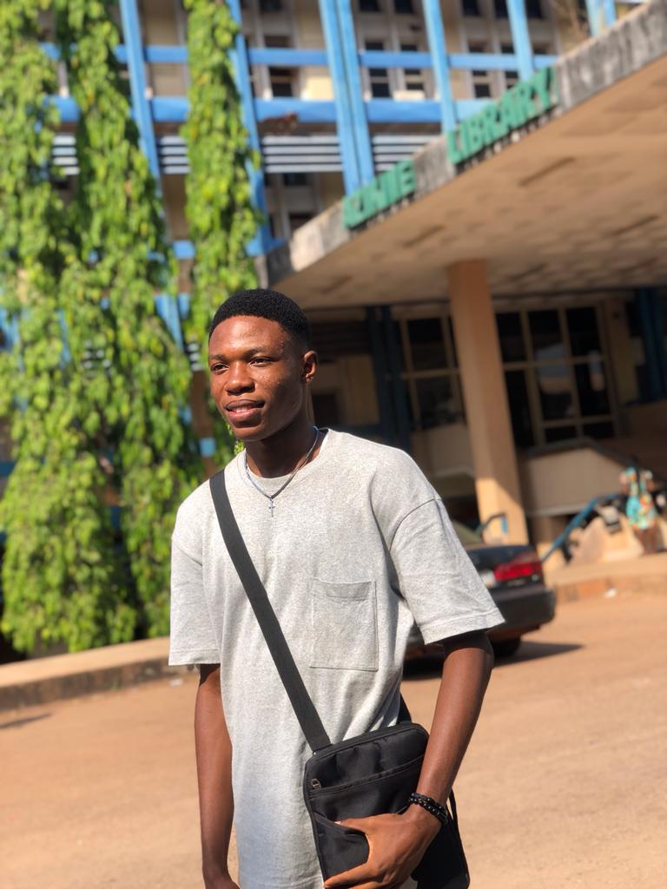

Name: Nwalozie Paul
Age: 20
Occupation: Student
My Social Links
Aspirations regarding upskill program
- Become a Professional Web Developer: The primary goal is be to acquire the skills and knowledge necessary to pursue a career as a professional web developer.
- Create Personal Projects: Develop the ability to create personal websites, blogs, or web applications for hobbies, interests, or personal branding.
- Start a Freelance Career: I aspire to also work independently as a freelance web developer, offering services to clients or businesses.
- Enhance Existing Skills: To improve existing web development skills and stay updated with the latest technologies and trends in the industry.
Objectives
- Learn Frontend Development: Master HTML, CSS, and JavaScript to create visually appealing and interactive user interfaces.
Question and Answer section
Questions
- Who's the president of Russia?
- How many states are there in Nigeria?
- List the 5 states in South-east Nigeria?
Answers
- The president of Russia is Vladimir Putin.
- There are 36 states in Nigeria.
- Abia state.
- Anambra state.
- Ebonyi state.
- Enugu state.
- Imo state.